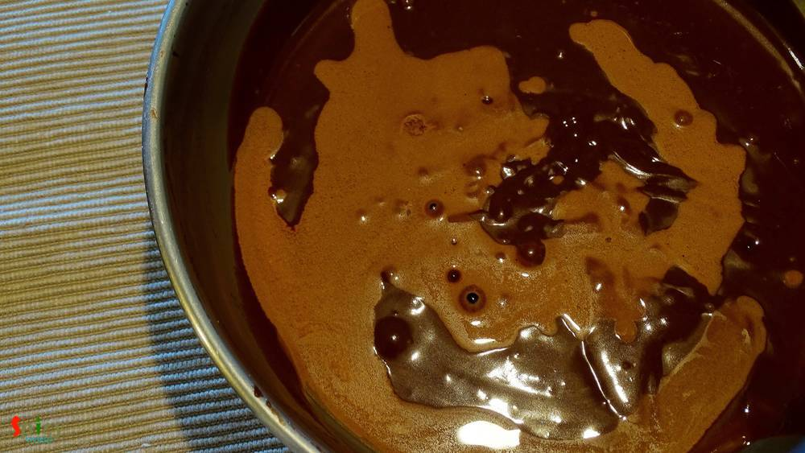
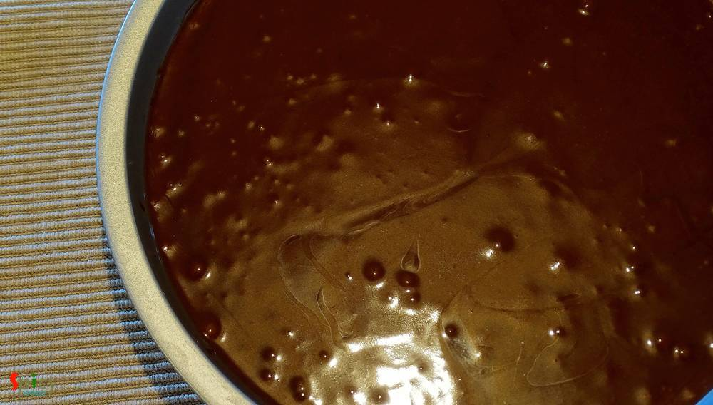
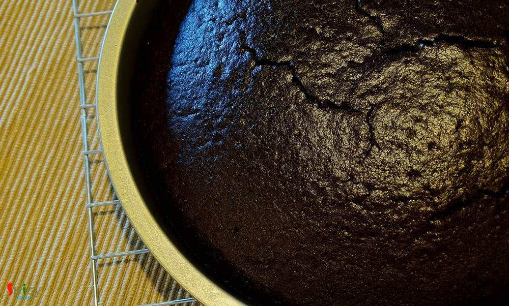
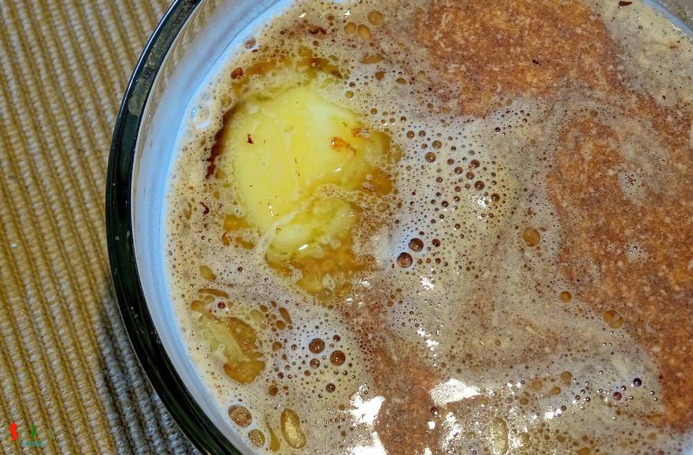
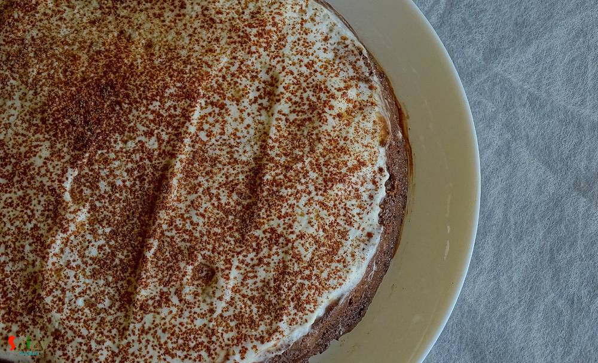

Simple and Easy Recipes
Chocolate Tres Leches Cake / 3 Milk Chocolate Cake (Eggless)
© 2016 Spicy World, Published on: Mar 2, 2016
In Austin winter has already started melting down. Specially at afternoon hot dry air and sunlight starts forcing us to say 'goodbye' to winter. The season of sweating and thirsting is almost waiting on our doorstep. But we can always make suitable and comfortable food for any kind of season. 'Tres Leches' (Spanish word) cake is the perfect chilled dessert for summer. In this recipe an eggless cake will be soaked in 3 types of milk (whole milk, condensed milk and heavy cream) and the special addition will be Chocolate. Don't worry, the cake won't be 'too much' soggy. You can keep it in fridge upto 7 days. Want to know what is the best part?? I am writing about 'tres leches' and also having it right now !!!
")
Ingredients
- 1 cup of all purpose flour.
- Half cup of unsweetened cocoa powder.
- Half cup and little more of granulated sugar.
- 1 and half Teaspoons of baking soda.
- Pinch of salt.
- Half cup of chilled tap water.
- Half cup of vegetable oil.
- 2 Teaspoons of vanilla essence.
- 1 and 1/4th Teaspoons of vinegar / lemon juice.
- Ingredients for chocolate milk:
- 10 cubes of dark chocolate.
- 2 Teaspoons of cocoa powder.
- 1 Teaspoon of butter (optional).
- Half cup of heavy cream.
- 1/4th cup of condensed milk.
- Half cup of whole milk.
")
")
Steps
Preheat your oven in 350℉ for 10 - 15 minutes.
Take a mixing bowl and place a sieve.
Now put all the dry ingredients like flour, sugar, cocoa powder, baking soda and salt in the sieve.
Start sieving them 3 - 4 times.
Make a hole in the center.
Add chilled water, oil and vanilla essence.
Start mixing with a spatula.
After 3 minutes add vinegar / lemon juice and again mix for 2 minutes.

Pour the batter in a greased pan and bake it for 35 to 40 minutes in 350℉.

Remove the cake from the oven and let it cool down completely.

It's time to make chocolate milk.
Place the dark chocolate cubes and butter in a bowl.

Pour heavy cream, whole milk and condensed milk in a saucepan.
Make them warm not boiling hot and pour the milk upon the chocolates.

After a minute mix the milk with a whisk properly.
Now start pricking the chocolate cake with a fork and then slowly pour the chocolate milk mixture over the cake.
Place the cake in refrigerator for 2 - 3 hours.
The cake will soak all the milk.
Before serving spread some whipped cream and sprinkle some cocoa powder on top.

Your chocolate tres leches is ready ...
Enjoy this chilled dessert after some spicy meal ..
 (Final)")